Local review only. No commit, push, or publication was performed.
192 English pages translated into nine languages, producing 1,728 saved language pages. Google Translate attribution appears at the bottom, before the footer. The globe and selector now appear in every page header, to the left of the phone number. Visits and language switching do not call the translation API.
5,224,084 characters sent in 1,243 requests, including a failed 4,471 character request retained in the conservative cost calculation. Estimated API charge before credits: $104.48. Another 252 characters were reused from saved Google results. This is usage accounting, not a live billing statement. Existing shared monthly allowance and Dami Dom priority were preserved.
Original translation browser checks: 216 page, language, and width combinations. Complete translated Home and Blog chat flows: 18. No observed overflow, missing images, JavaScript exceptions, or browser translation API requests in these checks. The latest header and button corrections have a separate review below.
Offline audit: 1728 translated pages, 70326 local links, 11250 media references. Issues: 0.
The 50 state pages and their 450 translated copies remain unapproved drafts, retain noindex, and are excluded from the sitemaps. Translation does not verify legal claims. Native speaker review of machine translation remains pending.
Current PDF readiness and no scrollbar corrections: Open the current report and actual screenshots. Earlier city row screenshots show historical scrolling behavior and are superseded by the current no scrollbar checks.
Spanish: Home | Blog | Service | State draft
Persian: Home | Blog | Service | State draft
Armenian: Home | Blog | Service | State draft
Chinese: Home | Blog | Service | State draft
Korean: Home | Blog | Service | State draft
Tagalog: Home | Blog | Service | State draft
Telugu: Home | Blog | Service | State draft
Russian: Home | Blog | Service | State draft
Arabic: Home | Blog | Service | State draft
City links stay on one line at 14 to 15 pixels. On narrow screens, the row scrolls horizontally so every city remains readable and accessible.
First row: Home, About, Services, Notes, Nationwide, phone, and email. The second row retains all ten cities. The third row retains the existing copyright and website credit.
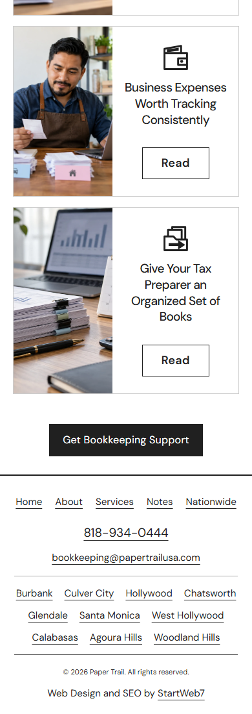
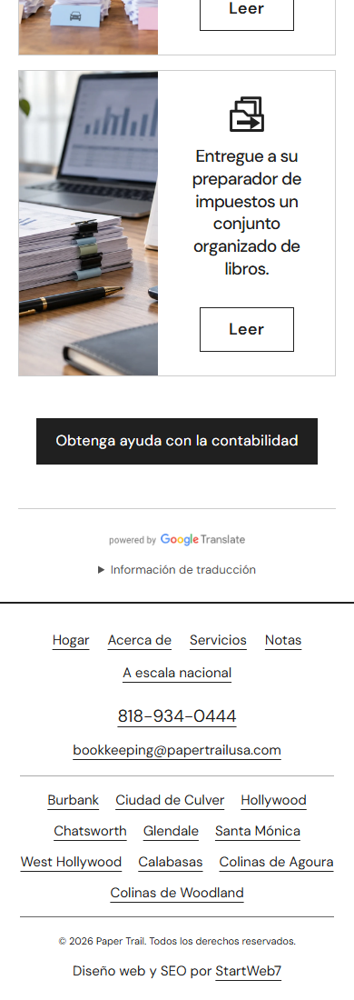
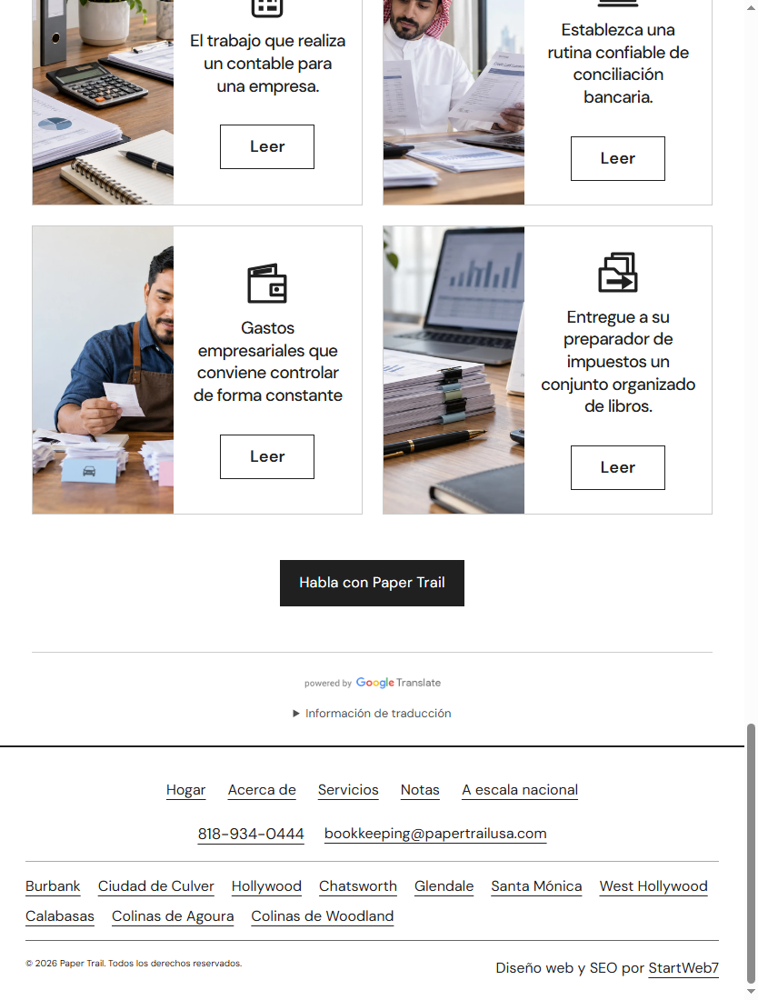
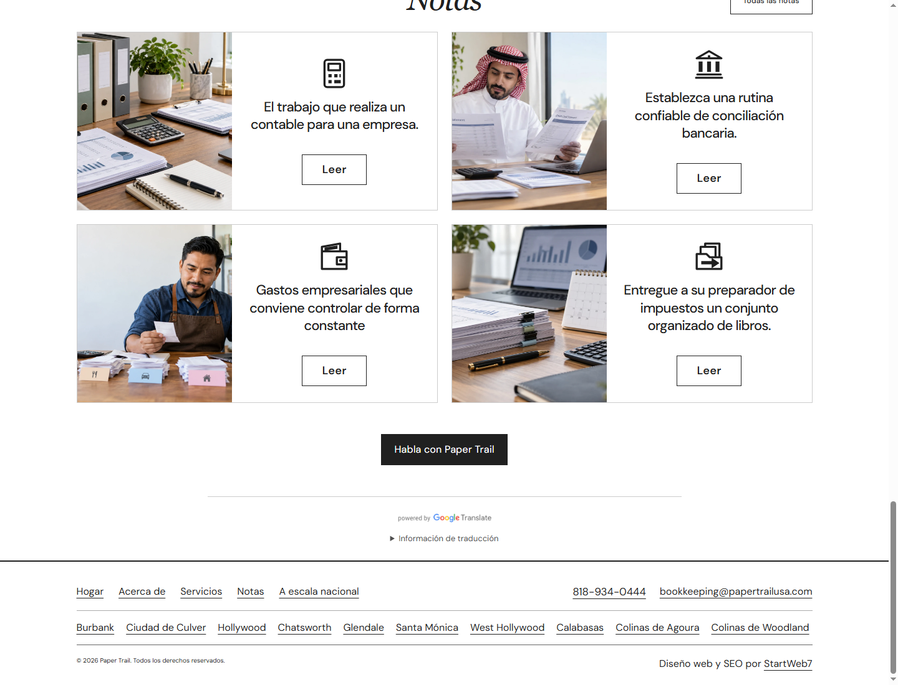
The selector and globe now appear on every page, to the left of the phone number. The Google badge is centered. The two service actions form a vertical stack, with 28 to 32 pixels after the cards and 20 pixels between the buttons.
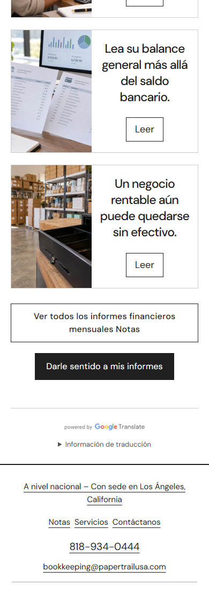
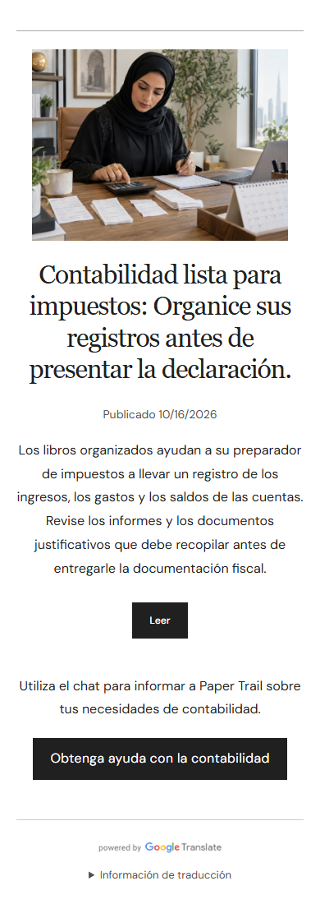
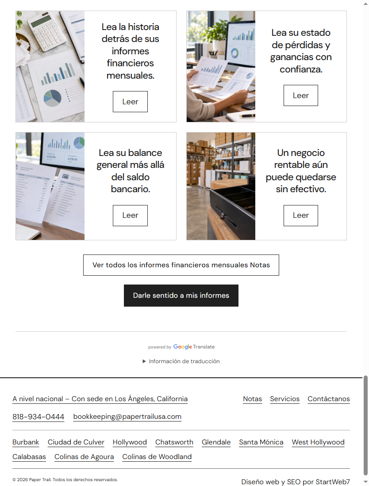
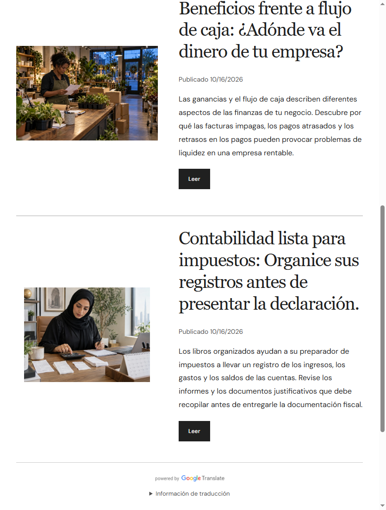
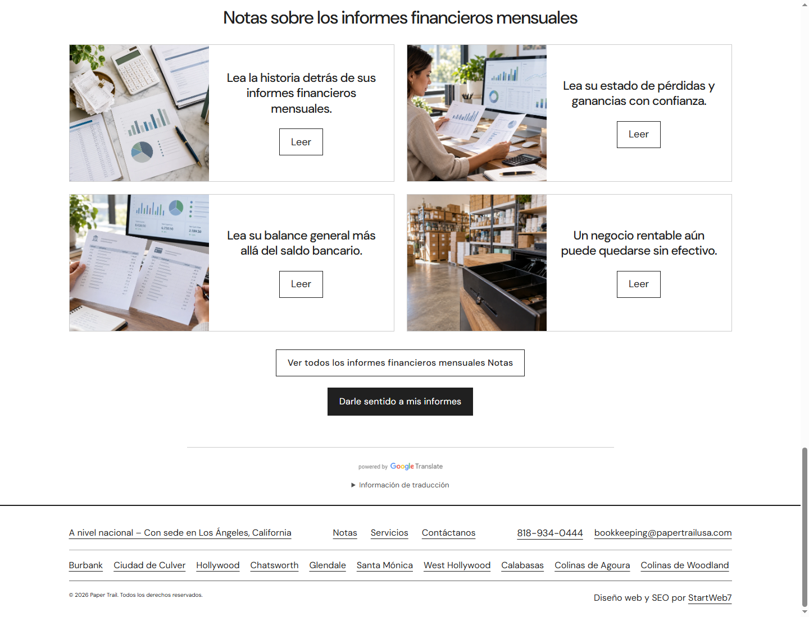
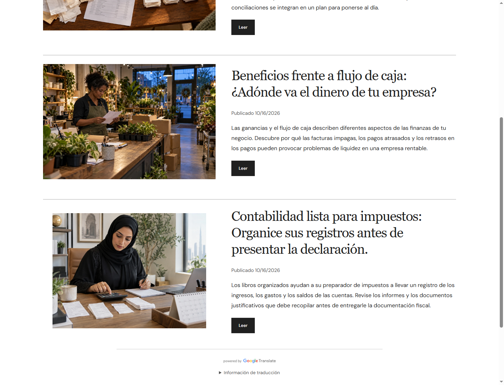
390 pixels, phone. 834 pixels, iPad. 1440 pixels, desktop. See the latest correction screenshots above for the current selector placement.
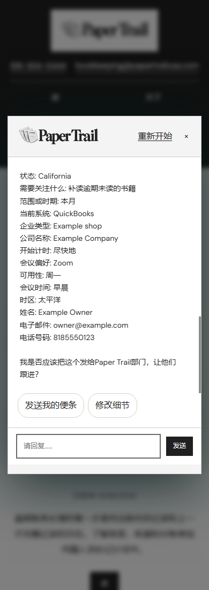